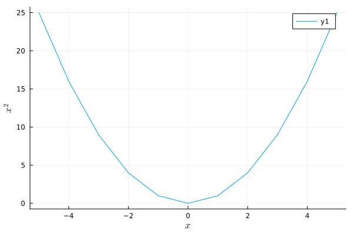
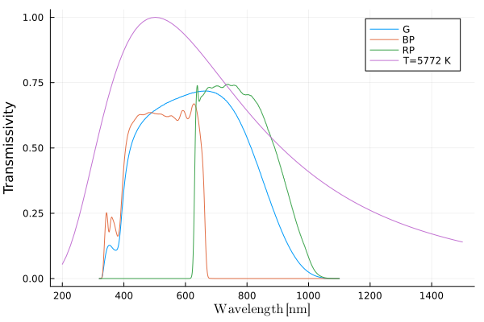
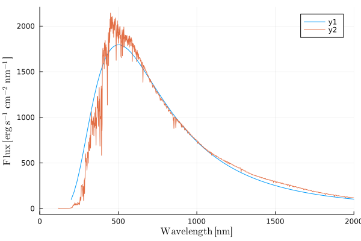
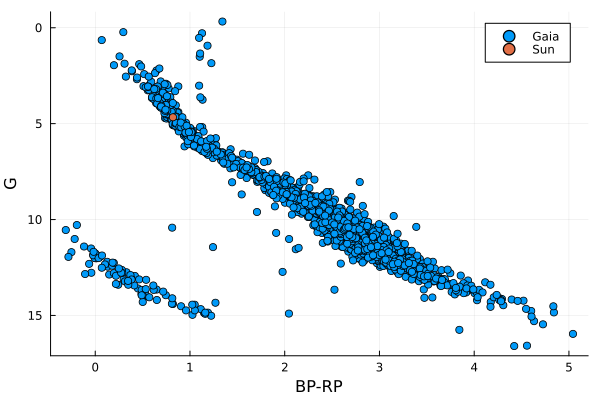
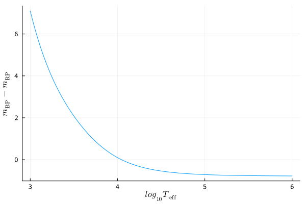
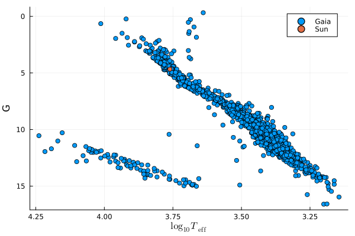
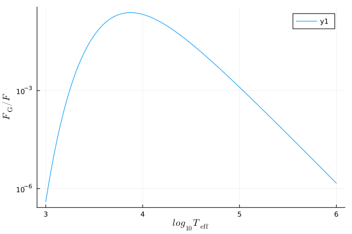
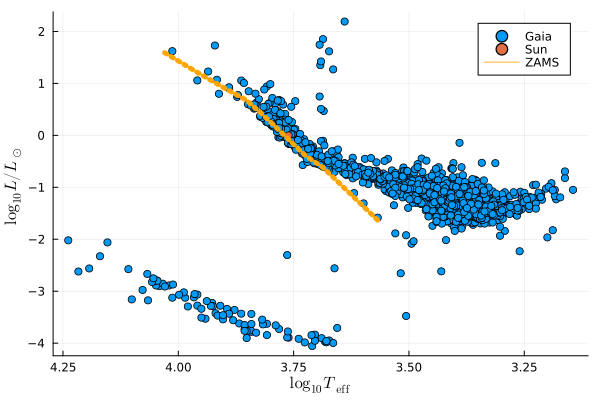

Some history
Contents
1. Some history#
1.1. Exercises#
1.2. Computational exercises#
using DataFrames
using Plots
using CSV
using LaTeXStrings
function add1(x)
return x+1
end
add1(1)
2
xvals = LinRange(-5.0,5.0,11)
11-element LinRange{Float64, Int64}:
-5.0,-4.0,-3.0,-2.0,-1.0,0.0,1.0,2.0,3.0,4.0,5.0
add1.(xvals)
11-element Vector{Float64}:
-4.0
-3.0
-2.0
-1.0
0.0
1.0
2.0
3.0
4.0
5.0
6.0
yvals = xvals.^2
plot(xlabel=L"$x$", ylabel=L"$x^2$")
plot!(xvals, yvals)

1.2.1. Sources#
Gaia passband info: https://www.cosmos.esa.int/web/gaia/edr3-passbands
Gaia archive: https://gea.esac.esa.int/archive/
Sun Gaia magnitude: https://ui.adsabs.harvard.edu/abs/2018MNRAS.479L.102C/abstract
Sun effective temperature (5772 K): Resolution B3 on recommended nominal conversion constants for selected solar and planetary properties Proposed by IAU Inter-Division A-G Working Group on Nominal Units for Stellar & Planetary Astronomy The XXIXth International Astronomical Union General Assembly, https://www.iau.org/static/resolutions/IAU2015_English.pdf
Solar spectrum: https://www.nrel.gov/grid/solar-resource/spectra-astm-e490.html
h = 6.6261e-27 # Planck's constant, cm^2 g s^-1
c = 2.99792458e10 # speed of light cm s^-1
k_b = 1.3807e-16 # Boltzmann constant erg K-1
σ = 2*π^5*k_b^4/(15*h^3*c^2) # Stefan-Boltzmann constant
function spectral_radiance(λ,T) #λ in nm, T in Kelvin
λ_cm = λ*1e-7
return 2*h*c^2/λ_cm^5*(1/(exp(h*c/(λ_cm*k_b*T))-1))
end
function normalized_spectral_radiance(λ,T) #λ in nm, T in Kelvin
peak_λ = h*c/(4.965*k_b*T)*1e7 #in nm
return spectral_radiance(λ,T)/spectral_radiance(peak_λ,T)
end
normalized_spectral_radiance (generic function with 1 method)
passbands = CSV.read("passband.dat", header=1, delim=" ", ignorerepeated=true, DataFrame)
plot(xlabel=L"$\mathrm{Wavelength\;[nm]}$", ylabel="Transmissivity")
plot!(passbands.lambda, passbands.G_pb, label="G")
plot!(passbands.lambda, passbands.BP_pb, label="BP")
plot!(passbands.lambda, passbands.RP_pb, label="RP")
xvals = LinRange(200.0,1500.0,100)
plot!(xvals, normalized_spectral_radiance.(xvals,5772), label="T=5772 K")

solar_spectrum = CSV.read("solar_spectrum.dat", header=1, delim=" ", ignorerepeated=true, DataFrame)
plot(xlabel=L"$\mathrm{Wavelength\;[nm]}$", ylabel=L"$\mathrm{Flux}\; [\mathrm{erg\;s^{-1}\;cm^{-2}\;nm^{-1}}]$", xlims=[0,2000])
xvals = LinRange(200.0,2000.0,100)
au = 1.5e13
Rsun = 7e10
plot!(xvals, pi*spectral_radiance.(xvals,5772)/1e7/(au/Rsun)^2)
plot!(solar_spectrum.lambda, solar_spectrum.flux)

gaia_data = CSV.read("gaia_100pc_par_over_err_100.csv", header=1, DataFrame)
plot(xlabel="BP-RP", ylabel="G")
color = gaia_data.phot_bp_mean_mag - gaia_data.phot_rp_mean_mag
distance_pc = 1 ./ (1e-3.*gaia_data.parallax)
abs_G = gaia_data.phot_g_mean_mag .- 5 .* (log10.(distance_pc).-1)
G_sun = 4.67
BP_sun = G_sun+0.33
RP_sun = G_sun-0.49
scatter!(color, abs_G,label="Gaia")
scatter!([BP_sun-RP_sun],[G_sun], label="Sun")
yflip!(true)

function flux_ratio_BP_RP(T)
# Ignoring constant in the integration, relying on bins being equally spaced in lambda
F_sun_BP = sum(passbands.BP_pb .* normalized_spectral_radiance.(passbands.lambda,T))
F_sun_RP = sum(passbands.RP_pb .* normalized_spectral_radiance.(passbands.lambda,T))
return F_sun_BP/F_sun_RP
end
diff_zero_point_BP_RP = 0.82+2.5*log10(flux_ratio_BP_RP(5772))
# sample
log10_T_sample = LinRange(3.0,6.0,100)
BP_sub_RP = -2.5*log10.(flux_ratio_BP_RP.(10 .^ log10_T_sample)) .+ diff_zero_point_BP_RP
plot(xlabel=L"$log_{10} T_\mathrm{eff}$",ylabel=L"$m_\mathrm{BP}-m_\mathrm{RP}$")
plot!(log10_T_sample, BP_sub_RP,label="")

#bisection algorithm to get Teff from BP-RP
function log10_T_from_BP_sub_RP(BP_sub_RP)
log10_T_min = 3.0
log10_T_max = 6.0
log10_T = 0.0
while abs(log10_T_min-log10_T_max) > 0.001
log10_T = 0.5*(log10_T_max + log10_T_min)
BP_sub_RP_new = -2.5*log10.(flux_ratio_BP_RP(10^log10_T)) .+ diff_zero_point_BP_RP
if BP_sub_RP_new > BP_sub_RP # T too low, update lower limit
log10_T_min = log10_T
else # otherwise, update upper limit
log10_T_max = log10_T
end
end
return log10_T
end
log10_T_from_BP_sub_RP (generic function with 1 method)
log10_T = log10_T_from_BP_sub_RP.(color);
plot(xlabel=L"$\log_{10}T_\mathrm{eff}$", ylabel="G")
scatter!(log10_T, abs_G,label="Gaia")
scatter!([log10_T_from_BP_sub_RP(BP_sun-RP_sun)],[G_sun],label="Sun")
yflip!(true)
xflip!(true)

function flux_ratio_G_total(T)
# Ignoring constant in the integration, relying on bins being equally spaced in lambda
F_G = sum(passbands.BP_pb .* spectral_radiance.(passbands.lambda,T) .*1e-7)
return π*F_G/(σ*T^4)
end
plot(xlabel=L"$log_{10} T_\mathrm{eff}$",ylabel=L"$F_\mathrm{G}/F$", yscale=:log)
plot!(log10_T_sample, flux_ratio_G_total.(10 .^ log10_T_sample))

log10_L_div_Lsun = (G_sun .- abs_G)./(2.5) .-
log10.(flux_ratio_G_total.(10 .^ log10_T)) .+ log10.(flux_ratio_G_total.(5772));
plot(xlabel=L"$\log_{10}T_\mathrm{eff}$", ylabel=L"\log_{10}L/L_\odot")
# Predicted Zero-age main-sequence location for stars of masses (in Msun):
# 0.4, 0.8, 0.9, 1.0, 1.25, 1.5, 1.7, 2, 2.5
# All models except those with M=0.4 Msun are from Schaller et al. (1992):
# - https://ui.adsabs.harvard.edu/abs/1992A%26AS...96..269S/abstract
# Model at 0.4 Msun is from Charbonnel et al. (1999):
# - https://ui.adsabs.harvard.edu/abs/1999A%26AS..135..405C/abstract
log10_T_geneva = [3.568, 3.687, 3.724, 3.751, 3.808, 3.852, 3.901, 3.958, 4.031]
log10_L_geneva = [-1.63, -0.612, -0.394, -0.163, 0.325, 0.676, 0.916, 1.209, 1.600]
scatter!(log10_T, log10_L_div_Lsun, label="Gaia")
#scatter!(log10_T, (G_sun .- abs_G)./(-2.5))
scatter!([log10_T_from_BP_sub_RP(BP_sun-RP_sun)],[0], label="Sun")
plot!(log10_T_geneva, log10_L_geneva, linewidth=5, linestyle= :dot, color="orange", label="ZAMS")
xflip!(true)
